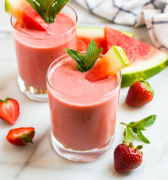

Watermelon Milkshake

Description
This watermelon milkshake is perfect for hot summer days or whenever you crave a cool and fruity beverage.
Ingredients:
- 2 cups of fresh, seedless watermelon chunks
- 1/2 cup of vanilla ice cream
- 1/2 cup of milk (dairy or non-dairy)
- 1-2 tablespoons of honey or sugar (optional, adjust to taste)
- Ice cubes (optional, for a colder milkshake)
- Fresh mint leaves or a slice of lime for garnish (optional)
Steps:
- Start by cutting the fresh watermelon into small, seedless chunks. You'll need about 2 cups of watermelon chunks.
- Place the watermelon chunks in a blender.
- Add the vanilla ice cream and milk to the blender.
- If you prefer a sweeter milkshake, you can add 1-2 tablespoons of honey or sugar at this point. Adjust the sweetness to your taste.
- If you want a colder milkshake, you can add a few ice cubes to the blender.
- Blend all the ingredients on high until the mixture is smooth and creamy.
- Taste the milkshake and adjust the sweetness if needed by adding more honey or sugar.
- Once the milkshake is smooth and to your liking, pour it into glasses.
- If desired, garnish each glass with a sprig of fresh mint leaves or a slice of lime for an extra burst of freshness.
- Serve your watermelon milkshake immediately with a straw, and enjoy this refreshing and hydrating treat!
Enjoy your delicious and nutritious watermelon milkshake!